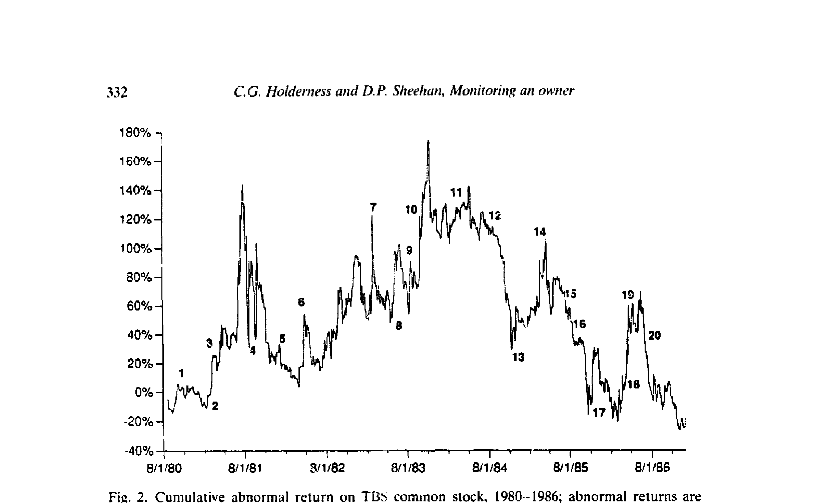
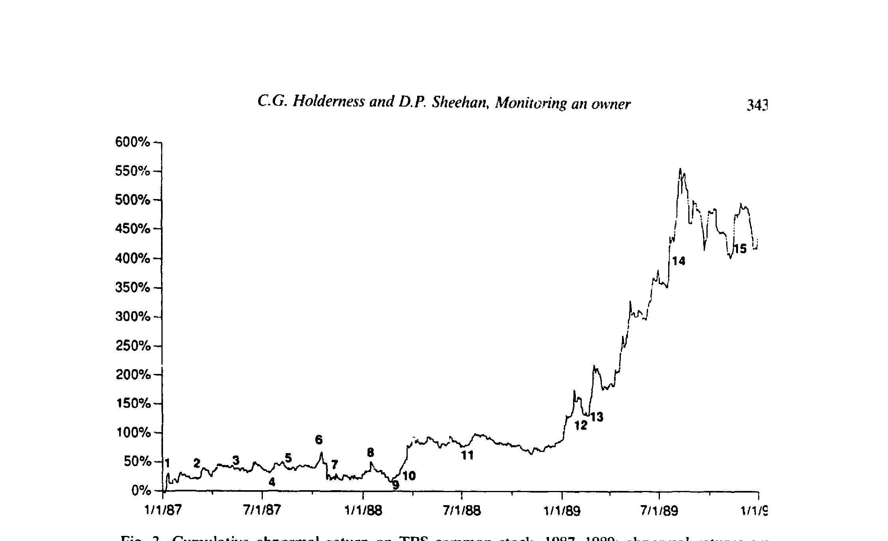
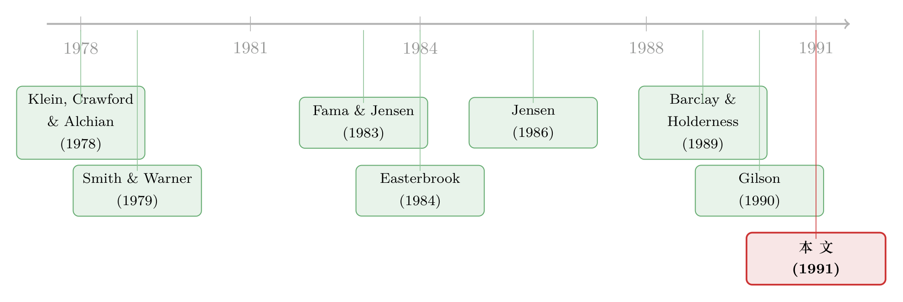

他说『没人能收购我』——可最后管住他的，是几家有线电视台
本文读的是 Holderness & Sheehan (1991, Journal of Financial Economics)：当一家公司的老板同时是控股股东，董事会管不了他、敌意收购也碰不了他——可特纳广播（Turner Broadcasting, TBS）却演示了一条出路。几家有线电视公司通过持有一种「特殊」的优先股，拿到七个董事席位与「超级多数」否决权，硬是给「神权治理」的 Ted Turner 套上了缰绳；而约束建立之后，TBS 的市场调整股价在两年里上涨了 400%。
1 一个收不动、也管不住的人
先讲一句话。
特纳广播的老板 Ted Turner 曾公开宣称：他的有线电视网「不会被收购，除非我自己想——而我没有这个打算」。这话听上去像是首富的自负，可它在公司金融里其实是一个很扎实的事实判断：当一个经理人同时握有公司多数股权时，外部世界几乎拿他没办法。
这就引出了本文要拧住的那根弦——代理成本 (agency cost) 的「死角」。
我们都熟悉那套教科书逻辑：经理人持股越多，他和股东的利益就越一致，他偷懒、挥霍、自肥的动机就越小，于是代理成本随持股上升而下降。可这套逻辑在「控股老板」这里失灵了。原因有三：其一，他可能根本不具备经营这家公司的本事，持股再多也于事无补；其二，他持股太多以致风险过度集中，不再按系统性风险来做决策；其三——也是最要命的——少数股东并不能保证拿到与持股比例对应的那份利润。老板可以给自己开天价工资、消费在职津贴、以低于市场的利率向公司借钱，或者干脆做出种种损人利己的安排。
文章一上来就给了一组数字提醒你：这绝不是个别现象。Mikkelson 与 Partch (1989) 在 240 家 NYSE/Amex 上市公司的随机样本里发现，高管和董事平均控制 20% 的投票权（中位数 14%），超过四分之一的公司管理层持股达到甚至超过 30%——这通常被视作「有效控制」的门槛。从 Playboy 的 Hugh Hefner（53%）、伯克希尔的 Warren Buffett（41%）、沃尔玛的 Sam Walton（39%）到微软的 Bill Gates（38%），「老板即大股东」是美国公司的常态，而不是例外。
接着，一个自然的问题是：那些平时保护少数股东的机制，到哪儿去了？
答案是：它们对控股老板基本不起作用。代理理论最看重的两道闸——董事会监督，与敌意收购——在这里都被拆掉了引信。董事会管不了一个握有控股权的 CEO，因为他可以直接把反对他的董事炒掉。文中举了 DWG 公司的例子：一位董事挑战了持股 46% 的董事长 Victor Posner，结果「几个小时后」就被解雇了。而敌意收购同样无从下手——Resorts International 的控股股东 James Crosby 把公司当成「私人领地」经营，这种局面一直持续到他去世；他一死，Resorts 的股价一天之内涨了 37%。市场早就给「私人领地」标好了折价。
Ted Turner 正是这样一位老板。他自封「南方之口」「无畏船长」，被评论者称作「以神权统治」；他靠掷一枚硬币就决定转播被抵制的莫斯科奥运会，那一下让公司亏了 2500 万美元。一位观察者说他「把公司当成私人领地，所有高管直接向他汇报，所有决策由他一人做出」。
于是张力就摆在这里了：这样一个人，怎么可能被管住？ 而本文要讲的，恰恰是他被管住的故事。
2 识别策略：一场「临床解剖」，用事件研究量出反应
先说清楚这是一篇什么样的论文。
它不是一篇靠大样本回归识别因果的论文，而是一篇 临床案例研究 (clinical study)——把一家公司的一段历史掰开揉碎，看组织机制是如何随事件一步步演化出来的。这类方法在 JFE 有传统（同期的 Baker & Wruck (1989) 解剖 O.M. Scott、Wruck (1989) 研究私募融资中的股权集中，都是同一路数）。它的长处是能看清「机制如何运转」这种大样本看不见的细节；短处则是只有一个观测、外部有效性存疑——这一点我们后面再谈。
但作者并没有只讲故事。他们用 事件研究 (event study) 给这段历史装上了一把量尺：把华尔街日报披露每条消息的当天与前一天的 TBS 超额收益累加，得到「两日超额收益」，并配上 t 值。超额收益的算法值得一提，因为它处理了 beta 会漂移的问题：
$$ \text{excess return} = R_{\text{actual}} - R_{\text{predicted}} $$
预期收益用一个 滚动回归 (rolling regression) 来估——每次用 12 个月的日度数据估出当月的 beta，再用它预测下个月的收益；无风险利率取 CRSP 的当月 30 天国库券利率，市场收益用 CRSP 市值加权指数。t 值则用两倍日方差的平方根作标准误来构造。换句话说，这把尺子允许 TBS 的系统性风险随时间变化，而不是钉死一个 beta。
图 2 把 1980 至 1986 年的累计超额收益与二十条重大事件标在了同一张图上。

Figure 2: Cumulative abnormal return on TBS common stock, 1980-1986; abnormal returns are
读这张图，最该盯住的是那条一路向下的累计超额收益曲线：从 1980 年在 NASDAQ 上市，到 1986 年并购 MGM，TBS 的股票相对市场跑输了约 20%。也就是说，Turner 的「神权治理」确实没给少数股东带来好处——快速增长的果实没有落到他们头上。同时图中那些显著的事件也很有意思：1983 年 1 月寻求与某电视网合并（事件 7），两日超额收益 +30.1%，t 值高达 5.2；而 1986 年 1 月与 MGM 董事会达成合并协议（事件 17），股价反而下跌 9.6%（t = −1.6）——市场担心这笔收购买贵了。
记住事件 17 这个负号。它正是整个故事的引爆点。
3 反转：约束不是设计出来的，是「逼」出来的
到这里，叙事要拐一个大弯。
约束 Ted Turner 的那套机制，并不是哪位治理专家精心设计的产物，而是从一场财务困境里被硬生生逼出来的。这才是本文最妙、也最反直觉的地方。
事情是这样的：1986 年，尽管 TBS 财务状况已经岌岌可危，Turner 还是花 15 亿美元买下了 MGM/UA。支付方式是现金加优先股，其中 48% 的优先股发给了 MGM 的大股东 Kirk Kerkorian。为筹措现金部分，TBS 发了 14 亿美元的债。
关键的扣子在两处。第一，这笔债的契约规定：除非公司总负债降到 11 亿美元以下、且净资产为正，否则不得派发现金股利——而 TBS 两个条件都达不到。第二，那批优先股要求 Turner 要么付现金股利，要么逐年用新发的普通股来付（每年 180 万股，从 1987 年 6 月 1 日起）。这意味着：如果 Turner 拿不出现金，他就得靠不断增发普通股来付息，他的控股地位会被一点点稀释掉。
于是 Turner 急于赎回 Kerkorian 手里的优先股。而恰在此时，几家大型有线电视公司也有自己的算盘——WTBS 和 CNN 是它们重要的节目来源，它们既想确保未来能拿到 TBS 的节目，又怕 TBS 落入「不友好之手」。经过五个月谈判，一个由几家主要有线电视公司组成的财团同意出资 5.6 亿美元——正好够赎回那批优先股——但条件是 Ted Turner 必须交出重大的决策权与控制权。
这就是约束的由来。注意它的因果链条有多么巧妙：固定的财务义务（债的契约 + 优先股的稀释威胁）→ 财务困境 → 老板被迫走向资本市场 → 资本市场提出监督条件。 这条链条，把好几篇经典文献串在了一起——债通过契约限制管理层行动（Smith & Warner, 1979），通过逼公司分配现金来发挥监督作用（Jensen, 1986）；财务困境会大幅放大大债权人的监督活动（Gilson, 1990）；而每一次走向资本市场，都可能招来对管理层的监督（Easterbrook, 1984）。TBS 不过是把这几条线，在一家公司身上同时演了一遍。
更深一层的问题是：为什么偏偏是这几家有线电视公司，成了合格的监督者？ 这正是本文真正想讲透的那个「核心」。
4 核心：好的监督者，要「懂行」且「利益对得上」
把约束 Turner 这件事抽象一下，本文的核心命题其实只有一句：
组织机制可以被「改造」，去约束一个连董事会和收购市场都碰不动的控股老板——前提是把监督权，交到那些既懂这门生意、又有动机去监督的人手里。
为什么是有线电视公司，而不是别的什么分散的小股东？因为它们手里有两样东西。其一是 专门的知识 (specific knowledge)：它们就在这个行业里，看得懂 TBS 的节目值多少钱、哪笔交易是在掏空。文中举了 Kerkorian 时代的一桩事——MGM 在把资产转给 TBS 之前，先把 100 部影片未来十年的独家播放权卖给了另一家有线公司，一位 TBS 高管事后抱怨「MGM 是个正在贬值的资产，我们没买到以为买到的东西」。一个外部小股东根本看不出这种门道，而同业看得一清二楚。其二是 对得上的激励：这几家有线公司本身就是 TBS 节目的买家，监督 TBS、防止它机会主义行事，恰好服务于它们自己的纵向一体化利益。这正是 Klein, Crawford & Alchian (1978) 讲的——纵向一体化是降低机会主义的一种方式；Kester (1991) 也记录了许多日本大公司持有供应商大额股权，以协调生产、抑制机会主义。
于是协议被设计成下面这副样子。它分两类：董事会的改造，与资本结构的改造。

Figure 3: Cumulative abnormal return on TBS common stock, 1987-1989: abnormal returns arr
如图 3 所示，1987 至 1989 年——也就是约束机制建立之后——TBS 的累计超额收益掉头向上。文中给出的数字是：组织变革后的两年里，经市场调整的股价上涨了约 400%；会计回报和债券价格也都上升，公司得以对其公开债务再融资。Ted Turner 与新来的监督者都公开表示对这套安排满意。约束，反而让公司繁荣了。
董事会这一侧，几乎是把「如何给一个控股老板上锁」写成了一份操作手册：
- 七个席位：有线公司通过持有全部新发的 C 类优先股，获得改组后 15 名董事中 7 名的提名权；另外 8 名仍由作为多数股东的 Turner 提名。
- 12 of 15 的超级多数：这是最不寻常、也最要害的一条。董事会对 17 类「重大公司行为」必须取得 15 名董事中 12 名的批准——这意味着 7 名 C 类董事里至少要有 4 人和 Turner 的 8 人投一致票。反过来说，C 类持有人作为一个整体，可以否决 Turner 或他的 8 名董事支持的任何行动。这 17 类事项细到什么程度？包括年度预算的每一项、任何超过
200 万美元的预算外支出、资本结构变动、并购清算、公司发起的诉讼、CEO/CFO/COO 三个最高职位的人事、乃至更换会计师。 - 委员会：协议前董事会只有一个执行委员会（两名内部人 + 一名自 1956 年起就担任公司律师的「外部人」）；协议后新设审计、薪酬、财务、规划四个委员会，其中三个由 C 类持有人占多数。
而在资本结构这一侧，真正的精巧在于优先股的「不可转让性」设计——这是把监督锁死在「合格监督者」手里的最后一道闩。表 1 把整份协议的要点列在了一处。
（注：上式不是论文里的计量方程，而是把协议三大支柱并排，帮助看清「控制权」是由哪几块拼出来的。）
这第三块——限制转让性——常被忽略，却是点睛之笔。如果 C 类优先股可以随便卖，那么它迟早会流到一群分散的、不懂行的小投资者手里，监督就失效了。所以协议规定：其他有线公司对它有优先购买权；一旦卖给「外人」，它就自动转为普通股（即丧失那套特殊控制权）。换句话说，这套设计刻意让监督权「黏」在那群既有专门知识、又有监督动机的人手里。这一点和 Karpoff & Rice (1989) 关于股份可转让性与公司绩效的讨论遥相呼应——可转让性并不总是好的，有时把控制权锁住，反而更有价值。
值得一提的是，这种「用董事会的特殊权力去约束多数股东」并非孤例。文中还举了 Carl Icahn 在 TWA、Harold Simmons 在 NL Industries 的例子：前者在增持多数股权时同意设立由外部董事组成的委员会来监督关联交易、并承诺两年内不卖出其股票（除非小股东能同价卖出），后者的多项重组动议被保留了否决权的外部董事挡了下来。约束控股股东这件事，市场自己摸索出了不止一种写法。
5 文献脉络
把这篇 1991 年的论文放回它的坐标系，故事会更清楚。
最早的那一层地基，来自 Klein, Crawford & Alchian (1978) 关于纵向一体化与可专用准租的讨论——它解释了为什么一个上游/下游的同业，会有动机去持有并监督另一家公司；这正是有线公司愿意当监督者的微观基础。紧接着，Smith & Warner (1979) 把债的契约如何约束管理层行为讲清楚了，而 Fama & Jensen (1983) 则奠定了「所有权与控制权分离」的整个分析框架——这篇论文研究的，恰恰是当所有权与控制权没有分离（老板即大股东）时该怎么办。

然后，一个自然的问题是：什么力量能逼一个不受约束的经理人接受监督？Easterbrook (1984) 给了「走向资本市场」这条线索，Jensen (1986) 的自由现金流理论给了「债逼公司吐出现金」这条线索（关于这条线索的当代回响，可参见《现金为什么一定要「还」出去？——四十年后，重读 Jensen 的自由现金流》）。而 Gilson (1989, 1990) 用实证记录了财务困境如何触发管理层更替与债权人监督的激增。本文恰好坐落在这几条线的交汇处：它把「债与优先股的固定义务 → 财务困境 → 资本市场监督」这条因果链，在 TBS 一家公司身上完整地演示了一遍。
它最直接的近邻，是 Holderness 自己与 Barclay 合作的 Barclay & Holderness (1989)——关于控制权私人收益的研究。本文可以读成那条线的「反面」：当控股股东可能攫取私利时，少数股东（这里是借由有线公司）如何反过来给他套上缰绳。这条「大股东、控制权私利与少数股东保护」的线，后来开枝散叶——从《拍卖桌上量出来的「掏空」》到《把股票挂到纽约，是为了给小股东一份『不会被偷』的承诺》，再到《把老板当成人质：日本财团里那台「会换挡」的治理机器》，都在回答同一个问题的不同变体：当法律或市场管不住老板时，谁来监督，又靠什么监督。
6 评论与延伸（Q&A + 研究方向）
(a) 几个可能的疑问
Q：这只是一个案例（n=1），凭什么能推广到别的公司？
诚实地说，外部有效性确实是本文最大的软肋。作者也很清楚这一点，所以他们的主张是克制的：不是「所有控股公司都会这样」，而是「存在一条可行的路径」——证明组织机制能够被改造来约束控股老板，并给出它在什么条件下出现（财务困境逼出资本市场监督）、长什么样（特殊优先股 + 董事席位 + 超级多数 + 限制转让）。他们还补充了 TWA、NL Industries 等旁证，说明这不是孤例。但「能发生」和「一般会发生」是两回事，这一步本文没有、也无法用单一案例走完。
Q：股价涨了 400%，真能归功于这套治理机制吗？会不会只是 CNN 那几年本来就要起飞？
这是识别上最该警惕的混淆。1987–1989 正是有线电视和 CNN 高速成长的几年，治理变革与基本面改善在时间上完全重叠，单凭一条上升的累计超额收益曲线，没法把「治理改善的功劳」与「行业顺风的功劳」分开。事件研究能较干净地识别具体公告日的市场反应（比如事件 17 的 −9.6%），但「两年涨 400%」这种长窗口的归因，本质上是描述性的，不是因果识别。读者应把它看作「与机制相容的证据」，而非「机制导致繁荣」的证明。
Q：有线公司既是监督者、又是 TBS 节目的买家，这种「利益对得上」会不会反过来变成新的利益冲突——它们压低节目价格来肥自己？
这正是这套设计的双刃之处。文中强调激励对齐是监督有效的前提，但同样的纵向关系，也给了有线公司在关联交易（节目定价）上损害其他股东的动机。协议用「超级多数」做了部分对冲——C 类持有人不能单方面决定事项（包括撤换 Turner），即使触发了额外席位的条件也不行；Turner 的 8 名董事仍是一道闸。所以这是一种相互制衡：谁也不能独断。但本文没有去检验关联交易这一侧的代理成本，这是个真实的开放问题。
Q：为什么不直接用债，而要发那种「会稀释控制权」的优先股？
区别恰在「控制权」。普通的债通过「还不上就破产、换管理层」来监督；而这里的优先股走的是另一条路——Turner 若付不出现金股利，就得逐年用普通股付息，从而在不违约、不破产的情况下，渐进地交出投票控制权。这是一种更精细的、专门针对「控股老板」的约束工具：它不威胁公司的存续，只威胁老板的控制权——而控制权，恰恰是这位老板最在乎的东西。
Q：限制优先股的转让，不是降低了它的流动性、从而损害持有人吗？为什么反而是好事？
因为这里要保护的，不是单个持有人的退出便利，而是监督的有效性。Karpoff & Rice (1989) 的逻辑是：可转让性一旦放开，控制权会扩散到一群既不懂行、又没动机监督的人手里，监督就稀释为零。把转让限制住（同业优先购买、卖给外人即转普通股），等于用流动性折价换来了「监督权始终在合格者手中」——对全体股东而言，这笔交换是划算的。
Q：那 Turner 本人为什么愿意接受这副「镣铐」？
因为替代方案更糟：要么付不出股利、控制权被优先股一点点稀释殆尽；要么 Kerkorian 这样的大股东进来指手画脚。相比之下，接受有线公司的
5.6 亿美元、保住普通股的多数地位、只是把「重大决策」交给董事会否决，是他在财务困境下能拿到的较优解。换句话说，约束之所以能落地，是因为它对老板自己也是一次帕累托改善——这也解释了为什么事后双方都表示满意。
(b) 几个可能的研究问题与提案
1. 把「债权人/优先股监督」搬到公司债市场做大样本检验
【经济故事】本文的核心机制——固定财务义务把老板逼向资本市场、从而招来监督——是可以一般化的。一个自然的延伸是：在公司债市场里，带有「治理型契约」（如降级触发、董事提名权、超级多数条款）的债券，是否系统性地享有更低的信用利差或更好的事后绩效？ 【可行性】中。数据上 Mergent FISD 的债券契约条款 + TRACE 的二级市场价格 + Compustat 基本面是现成的；难点在识别——契约是内生选择的，需要找到外生冲击（如某类契约因监管或判例而突然可用/失效）来做准自然实验。doable，但识别设计要花心思。
2. 控股股东 + 财务困境：谁的控制权会被「稀释式优先股」侵蚀？
【经济故事】TBS 的关键工具是「付不出现金股利就用普通股付息」的稀释机制。可以问：在控股老板的公司里，遭遇财务困境后，有多大比例会被迫接受这类稀释式证券？哪些老板宁可放弃控制权、哪些死扛？这直接度量了「控制权私人收益」的隐含价值。 【可行性】中偏低。这类精巧条款散落在 proxy statement 里，没有现成数据库，需要手工搜集（本文信息就取自 1987 年那份 30 多页的 proxy），样本量会很小。但若聚焦某一行业或某一时段，是可做的清醒选择。
3. 外资作为「合格监督者」：跨境持有人能否替代本地董事会？
【经济故事】本文强调监督者要「懂行 + 利益对得上」。把这套逻辑放到跨境场景：当本地治理薄弱时，一个有行业知识、且有长期商业利益的外资战略持有人，能否扮演有线公司在 TBS 里的角色？这与「外资是蝗虫还是监督者」的争论直接相关（可参见《外资真是「蝗虫」吗？》）。 【可行性】中。跨国持股数据（FactSet/Orbis）+ 各国治理指标可得；识别外资持股的因果效应需要工具变量（如指数纳入、可投资度改革）。是一个有现成识别工具、且与我自己关注的外资持有人方向贴合的题目。
4. 「限制转让性」作为治理工具的资产定价含义
【经济故事】本文暗示：把控制权证券锁在合格监督者手里、牺牲流动性，对全体股东是划算的。可以更一般地问：在 OTC 或私募市场里，带转让限制的「监督型股权」相对自由流通的同类，是否定价更高（监督溢价压过流动性折价）？ 【可行性】低偏中。私募/限制性证券的成交价格极难观测，需要依赖二级私募市场或大宗交易数据，样本稀疏。诚实判断：作为独立大样本研究偏难，但作为某个治理事件研究的一个切面，可行。
7 我的判断
这是一篇「小而锋利」的论文。它的贡献不在于估出了某个系数，而在于用一个干净的案例，证明了一个此前被默认为「无解」的命题其实有解：连董事会和敌意收购都奈何不了的控股老板，也能被组织机制套上缰绳——只要监督权落在懂行且利益对齐的人手里，并被「限制转让性」牢牢锁住。三大支柱（董事席位 + 超级多数否决 + 不可转让的特殊优先股）作为一份「治理操作手册」，今天读来依然清晰。我尤其欣赏作者对因果链条的刻画：约束不是被设计出来的，而是被财务困境逼出来的——这把 Jensen (1986)、Easterbrook (1984)、Gilson (1990) 几条线在一家公司身上拧成了一股。
对识别的担忧也很直白。其一是 n=1，外部有效性靠几个旁证勉强支撑，不能当作普遍规律。其二、也更要紧的，是那条「两年涨 400%」的归因：治理变革与 CNN 的行业起飞在时间上完全重叠，单一案例无法把两者的功劳分开，这条证据只能算「相容」而非「证明」。其三，有线公司「既当裁判又当买家」的双重身份，本身就埋着新的关联交易代理成本，本文对这一侧着墨很少。
后续我最想看到的，是把这套机制从「案例」推向「大样本」：在公司债与优先股市场里，带治理型契约的证券是否系统性地改善了事后绩效、压低了融资成本？以及——这更贴近我自己关心的方向——外资战略持有人能否在本地治理薄弱时，扮演 TBS 故事里那群有线公司的角色。三十多年前的特纳广播，也许早就替这些问题写好了一个最生动的引子。
参考文献
- Baker, George, and Karen H. Wruck (1989). Organizational changes and value creation in leveraged buyouts: The case of the O.M. Scott & Sons Company. Journal of Financial Economics 25, 163–190.
- Barclay, Michael J., and Clifford G. Holderness (1989). Private benefits from control of public corporations. Journal of Financial Economics 25, 371–395.
- DeAngelo, Harry, Linda DeAngelo, and Edward M. Rice (1984). Going private: Minority freezeouts and shareholder wealth. Journal of Law and Economics 27, 367–402.
- Easterbrook, Frank H. (1984). Two agency-cost explanations of dividends. American Economic Review 74, 650–659.
- Fama, Eugene F., and Michael C. Jensen (1983). Separation of ownership and control. Journal of Law and Economics 26, 301–326.
- Gilson, Stuart C. (1989). Management turnover and financial distress. Journal of Financial Economics 25, 241–262.
- Gilson, Stuart C. (1990). Bankruptcy, boards, banks, and blockholders. Journal of Financial Economics 27, 355–387.
- Holderness, Clifford G., and Dennis P. Sheehan (1991). Monitoring an owner: The case of Turner Broadcasting. Journal of Financial Economics 30, 325–346.
- Jensen, Michael C. (1986). Agency costs of free cash flow, corporate finance, and takeovers. American Economic Review 76, 323–329.
- Kaplan, Steven (1989). The effects of management buyouts on operating performance and value. Journal of Financial Economics 24, 217–254.
- Karpoff, Jonathan M., and Edward M. Rice (1989). Organizational form, share transferability, and firm performance: Evidence from ANCSA corporations. Journal of Financial Economics 24, 69–106.
- Kester, W. Carl (1991). Japanese Takeovers: The Global Contest for Corporate Control. Harvard Business School Press, Boston, MA.
- Klein, Benjamin, Robert G. Crawford, and Armen A. Alchian (1978). Vertical integration, appropriable rents, and the competitive contracting process. Journal of Law and Economics 21, 297–326.
- Mikkelson, Wayne H., and M. Megan Partch (1989). Managers' voting rights and corporate control. Journal of Financial Economics 25, 263–290.
- Ritter, Jay R. (1981). Two essays on information in financial markets. Unpublished dissertation, University of Chicago.
- Sahlman, William A. (1990). Venture capital: A model of project governance. Unpublished manuscript, Harvard University.
- Smith, Clifford W., Jr., and Jerold B. Warner (1979). On financial contracting: An analysis of bond covenants. Journal of Financial Economics 7, 117–161.
- Wruck, Karen H. (1989). Equity ownership concentration and firm value: Evidence from private equity financings. Journal of Financial Economics 23, 3–28.